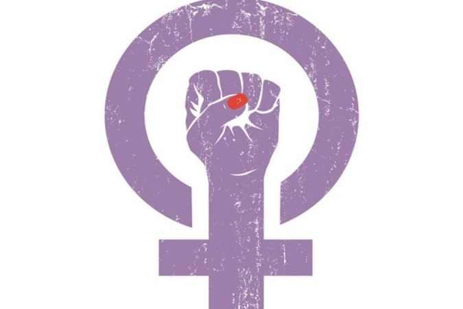

O Agosto Lilás, como iniciativa governamental de combate à violência contra a mulher, foi instituído em 9 de setembro de 2022, por meio da Lei nº 14.448, sancionada pelo então presidente Jair Bolsonaro.
Dita lei determinava: "É instituído, em âmbito nacional, o Agosto Lilás como mês de proteção à mulher, destinado à conscientização para o fim da violência contra a mulher."
O mês de agosto foi escolhido para a campanha por estar diretamente ligado à data de sanção da Lei Maria
da Penha, marco legal no combate à violência contra a mulher no Brasil. Essa associação reforça o
simbolismo do período como um momento de conscientização, mobilização social e fortalecimento das
políticas de proteção às mulheres.


A Lei Maria da Penha, sancionada em 7 de agosto de 2006, homenageia Maria da Penha Maia Fernandes,
vítima de duas tentativas de feminicídio pelo marido. Sua luta por justiça, que ganhou repercussão
internacional, resultou na criação de uma lei específica para coibir e punir a violência doméstica e
familiar contra a mulher, tornando-se um marco na defesa dos direitos femininos.
A cor lilás tornou-se símbolo da luta pelos direitos das mulheres desde o movimento sufragista do século
XIX, representando justiça e dignidade. Com o tempo, passou a ser associada à igualdade de gênero e ao
combate à violência contra a mulher. No Agosto Lilás, essa cor reforça a mensagem de respeito, coragem e
transformação social que a campanha busca transmitir.